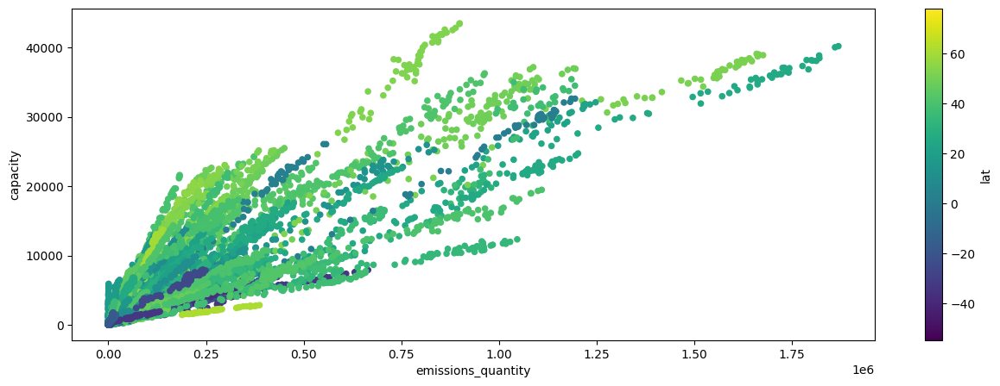
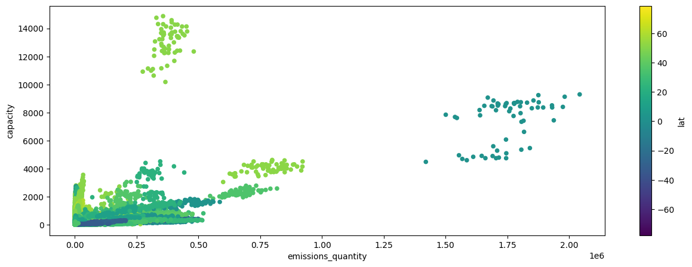

import numpy as np
import pandas as pd
import matplotlib.pyplot as plt
import random
from collections import Counter
Loading the packages
Reading in the data
Our data are provided in a csv-format and we can use the read_csv inbuilt pandas function. This function converts our data in a dataframe
aviation_data=pd.read_csv("aviation.csv")
shipping_data=pd.read_csv("shipping.csv")
# by default the index is an integer number of range (1,...,n) rows.
# you can also explcitly assign an index with index_col="example"There are a lot of options available for the read_csv function. By default this function expects the data to be seperated with comma, however, sometimes you need a different so-called seperator -> read_csv(sep=“;”)
Data cleaning and pre-preperation
First look on our data:
aviation_data.head()| source_id | source_name | source_type | iso3_country | sector | subsector | start_time | end_time | lat | lon | ... | other9 | other9_def | other10 | other10_def | created_date | modified_date | sector_id | reporting_entity | lat_lon | native_source_id | |
|---|---|---|---|---|---|---|---|---|---|---|---|---|---|---|---|---|---|---|---|---|---|
| 0 | 3165649 | Queen Beatrix International Airport | international | ABW | transportation | international-aviation | 2021-01-01 00:00:00 | 2021-01-31 00:00:00 | 12.5014 | -70.015198 | ... | NaN | NaN | NaN | NaN | 2025-05-05 00:00:00 | 2026-03-06 18:10:58 | 64 | climate-trace | NaN | iata_AUA |
| 1 | 3165649 | Queen Beatrix International Airport | international | ABW | transportation | international-aviation | 2021-02-01 00:00:00 | 2021-02-28 00:00:00 | 12.5014 | -70.015198 | ... | NaN | NaN | NaN | NaN | 2025-05-05 00:00:00 | 2026-03-06 18:10:58 | 64 | climate-trace | NaN | iata_AUA |
| 2 | 3165649 | Queen Beatrix International Airport | international | ABW | transportation | international-aviation | 2021-03-01 00:00:00 | 2021-03-31 00:00:00 | 12.5014 | -70.015198 | ... | NaN | NaN | NaN | NaN | 2025-05-05 00:00:00 | 2026-03-06 18:10:58 | 64 | climate-trace | NaN | iata_AUA |
| 3 | 3165649 | Queen Beatrix International Airport | international | ABW | transportation | international-aviation | 2021-04-01 00:00:00 | 2021-04-30 00:00:00 | 12.5014 | -70.015198 | ... | NaN | NaN | NaN | NaN | 2025-05-05 00:00:00 | 2026-03-06 18:10:58 | 64 | climate-trace | NaN | iata_AUA |
| 4 | 3165649 | Queen Beatrix International Airport | international | ABW | transportation | international-aviation | 2021-05-01 00:00:00 | 2021-05-31 00:00:00 | 12.5014 | -70.015198 | ... | NaN | NaN | NaN | NaN | 2025-05-05 00:00:00 | 2026-03-06 18:10:58 | 64 | climate-trace | NaN | iata_AUA |
5 rows × 47 columns
As we can see the dataset contains several columns with NaN values. For a comprehensive overview we can use the pandas decribe() function
aviation_data.info()<class 'pandas.DataFrame'>
RangeIndex: 135420 entries, 0 to 135419
Data columns (total 47 columns):
# Column Non-Null Count Dtype
--- ------ -------------- -----
0 source_id 135420 non-null int64
1 source_name 135420 non-null str
2 source_type 135420 non-null str
3 iso3_country 135420 non-null str
4 sector 135420 non-null str
5 subsector 135420 non-null str
6 start_time 135420 non-null str
7 end_time 135420 non-null str
8 lat 135420 non-null float64
9 lon 135420 non-null float64
10 geometry_ref 0 non-null float64
11 gas 135420 non-null str
12 emissions_quantity 135420 non-null float64
13 temporal_granularity 135420 non-null str
14 activity 135420 non-null float64
15 activity_units 135420 non-null str
16 emissions_factor 135420 non-null float64
17 emissions_factor_units 135420 non-null str
18 capacity 135420 non-null int64
19 capacity_units 135420 non-null str
20 capacity_factor 135420 non-null float64
21 other1 0 non-null float64
22 other1_def 0 non-null float64
23 other2 0 non-null float64
24 other2_def 0 non-null float64
25 other3 0 non-null float64
26 other3_def 0 non-null float64
27 other4 0 non-null float64
28 other4_def 0 non-null float64
29 other5 0 non-null float64
30 other5_def 0 non-null float64
31 other6 0 non-null float64
32 other6_def 0 non-null float64
33 other7 0 non-null float64
34 other7_def 0 non-null float64
35 other8 0 non-null float64
36 other8_def 0 non-null float64
37 other9 0 non-null float64
38 other9_def 0 non-null float64
39 other10 0 non-null float64
40 other10_def 0 non-null float64
41 created_date 135420 non-null str
42 modified_date 135420 non-null str
43 sector_id 135420 non-null int64
44 reporting_entity 135420 non-null str
45 lat_lon 0 non-null float64
46 native_source_id 135420 non-null str
dtypes: float64(28), int64(3), str(16)
memory usage: 48.6 MBWe can now choose how we deal with the NaN-values. One convenient way is dropna()
# we want to remove the the whole columns, therefore we add the argument for the respective axis
aviation_data_cleaned=aviation_data.dropna(axis="columns")
shipping_data_cleaned=shipping_data.dropna(axis="columns")Note that if you deal with big data you often make use of functions and loops in order create pipelines:
def cleaning(dataset):
return dataset.dropna(axis="columns")
def duplicate_cleaning(dataset):
return dataset.drop_duplicates()
datasets = {
"aviation_data": aviation_data,
"shipping_data": shipping_data
}
methods = [cleaning, duplicate_cleaning]
for name, dataset in datasets.items():
for method in methods:
dataset = method(dataset)
datasets[name] = dataset#mapping am Ende für die Zuweisung nutzen von Flugzeugen oder Schiffen die nicht mehr genutzt werden sollen
Next have a look again on the data type of the start and end times. We do want them to be in a datetime format. One way would be as follows:
# one way could be:
aviation_data_cleaned["start_time"]=pd.to_datetime(aviation_data_cleaned["start_time"])However, usually you work with different files and therefore loops and functions are recommended:
def data_conversion(dataset):
dataset["start_time"]=pd.to_datetime(dataset["start_time"])
dataset["end_time"]=pd.to_datetime(dataset["end_time"])
return dataset
data_list=[aviation_data_cleaned,shipping_data_cleaned]
for data in data_list:
data_conversion(data)aviation_data_cleaned.info()<class 'pandas.DataFrame'>
RangeIndex: 135420 entries, 0 to 135419
Data columns (total 25 columns):
# Column Non-Null Count Dtype
--- ------ -------------- -----
0 source_id 135420 non-null int64
1 source_name 135420 non-null str
2 source_type 135420 non-null str
3 iso3_country 135420 non-null str
4 sector 135420 non-null str
5 subsector 135420 non-null str
6 start_time 135420 non-null datetime64[us]
7 end_time 135420 non-null datetime64[us]
8 lat 135420 non-null float64
9 lon 135420 non-null float64
10 gas 135420 non-null str
11 emissions_quantity 135420 non-null float64
12 temporal_granularity 135420 non-null str
13 activity 135420 non-null float64
14 activity_units 135420 non-null str
15 emissions_factor 135420 non-null float64
16 emissions_factor_units 135420 non-null str
17 capacity 135420 non-null int64
18 capacity_units 135420 non-null str
19 capacity_factor 135420 non-null float64
20 created_date 135420 non-null str
21 modified_date 135420 non-null str
22 sector_id 135420 non-null int64
23 reporting_entity 135420 non-null str
24 native_source_id 135420 non-null str
dtypes: datetime64[us](2), float64(6), int64(3), str(14)
memory usage: 25.8 MBlets also create a new column for the start_time year
def date_conversion(data):
data["year"]=data["start_time"].dt.year
return data
for data in data_list:
date_conversion(data)For now the data looks fine, no more NaN values and all everything in the right format. Lets get a first impression of some descriptive stats
aviation_data_cleaned| source_id | source_name | source_type | iso3_country | sector | subsector | start_time | end_time | lat | lon | ... | emissions_factor_units | capacity | capacity_units | capacity_factor | created_date | modified_date | sector_id | reporting_entity | native_source_id | year | |
|---|---|---|---|---|---|---|---|---|---|---|---|---|---|---|---|---|---|---|---|---|---|
| 0 | 3165649 | Queen Beatrix International Airport | international | ABW | transportation | international-aviation | 2021-01-01 | 2021-01-31 | 12.5014 | -70.015198 | ... | t of CO2e_100yr per t of fuel | 1590 | flights | 3.808106 | 2025-05-05 00:00:00 | 2026-03-06 18:10:58 | 64 | climate-trace | iata_AUA | 2021 |
| 1 | 3165649 | Queen Beatrix International Airport | international | ABW | transportation | international-aviation | 2021-02-01 | 2021-02-28 | 12.5014 | -70.015198 | ... | t of CO2e_100yr per t of fuel | 1520 | flights | 3.699440 | 2025-05-05 00:00:00 | 2026-03-06 18:10:58 | 64 | climate-trace | iata_AUA | 2021 |
| 2 | 3165649 | Queen Beatrix International Airport | international | ABW | transportation | international-aviation | 2021-03-01 | 2021-03-31 | 12.5014 | -70.015198 | ... | t of CO2e_100yr per t of fuel | 1768 | flights | 3.594831 | 2025-05-05 00:00:00 | 2026-03-06 18:10:58 | 64 | climate-trace | iata_AUA | 2021 |
| 3 | 3165649 | Queen Beatrix International Airport | international | ABW | transportation | international-aviation | 2021-04-01 | 2021-04-30 | 12.5014 | -70.015198 | ... | t of CO2e_100yr per t of fuel | 1682 | flights | 3.925321 | 2025-05-05 00:00:00 | 2026-03-06 18:10:58 | 64 | climate-trace | iata_AUA | 2021 |
| 4 | 3165649 | Queen Beatrix International Airport | international | ABW | transportation | international-aviation | 2021-05-01 | 2021-05-31 | 12.5014 | -70.015198 | ... | t of CO2e_100yr per t of fuel | 1725 | flights | 4.061021 | 2025-05-05 00:00:00 | 2026-03-06 18:10:58 | 64 | climate-trace | iata_AUA | 2021 |
| ... | ... | ... | ... | ... | ... | ... | ... | ... | ... | ... | ... | ... | ... | ... | ... | ... | ... | ... | ... | ... | ... |
| 135415 | 3169756 | Victoria Falls International Airport | international | ZWE | transportation | international-aviation | 2025-09-01 | 2025-09-30 | -18.0959 | 25.839001 | ... | t of CO2e_100yr per t of fuel | 773 | flights | 1.970598 | 2025-11-03 00:00:00 | 2026-03-06 18:10:58 | 64 | climate-trace | iata_VFA | 2025 |
| 135416 | 3169756 | Victoria Falls International Airport | international | ZWE | transportation | international-aviation | 2025-10-01 | 2025-10-31 | -18.0959 | 25.839001 | ... | t of CO2e_100yr per t of fuel | 791 | flights | 2.019090 | 2025-11-03 00:00:00 | 2026-03-06 18:10:58 | 64 | climate-trace | iata_VFA | 2025 |
| 135417 | 3169756 | Victoria Falls International Airport | international | ZWE | transportation | international-aviation | 2025-11-01 | 2025-11-30 | -18.0959 | 25.839001 | ... | t of CO2e_100yr per t of fuel | 645 | flights | 2.084272 | 2026-01-06 00:00:00 | 2026-03-06 18:10:58 | 64 | climate-trace | iata_VFA | 2025 |
| 135418 | 3169756 | Victoria Falls International Airport | international | ZWE | transportation | international-aviation | 2025-12-01 | 2025-12-31 | -18.0959 | 25.839001 | ... | t of CO2e_100yr per t of fuel | 549 | flights | 2.196215 | 2026-02-02 00:00:00 | 2026-03-06 18:10:58 | 64 | climate-trace | iata_VFA | 2025 |
| 135419 | 3169756 | Victoria Falls International Airport | international | ZWE | transportation | international-aviation | 2026-01-01 | 2026-01-31 | -18.0959 | 25.839001 | ... | t of CO2e_100yr per t of fuel | 564 | flights | 2.212236 | 2026-03-02 00:00:00 | 2026-03-06 18:10:58 | 64 | climate-trace | iata_VFA | 2026 |
135420 rows × 26 columns
aviation_data_cleaned.describe()| source_id | start_time | end_time | lat | lon | emissions_quantity | activity | emissions_factor | capacity | capacity_factor | sector_id | year | |
|---|---|---|---|---|---|---|---|---|---|---|---|---|
| count | 1.354200e+05 | 135420 | 135420 | 135420.000000 | 135420.000000 | 1.354200e+05 | 135420.000000 | 1.354200e+05 | 135420.000000 | 135420.000000 | 135420.0 | 135420.000000 |
| mean | 4.781811e+06 | 2023-07-02 02:21:38.360655 | 2023-07-31 12:59:00.983606 | 27.805174 | 10.273544 | 1.777794e+04 | 5582.035904 | 3.184848e+00 | 794.238621 | 2.640764 | 64.0 | 2023.049180 |
| min | 8.268740e+05 | 2021-01-01 00:00:00 | 2021-01-31 00:00:00 | -54.843300 | -179.667007 | 0.000000e+00 | 0.000000 | 3.184848e+00 | 0.000000 | 0.000000 | 64.0 | 2021.000000 |
| 25% | 3.166576e+06 | 2022-04-01 00:00:00 | 2022-04-30 00:00:00 | 13.898300 | -61.427159 | 0.000000e+00 | 0.000000 | 3.184848e+00 | 0.000000 | 0.000000 | 64.0 | 2022.000000 |
| 50% | 3.167826e+06 | 2023-07-01 00:00:00 | 2023-07-31 00:00:00 | 34.053749 | 14.687551 | 5.674604e+01 | 17.817505 | 3.184848e+00 | 10.000000 | 0.938763 | 64.0 | 2023.000000 |
| 75% | 3.169110e+06 | 2024-10-01 00:00:00 | 2024-10-31 00:00:00 | 44.883974 | 55.675500 | 2.638393e+03 | 828.420547 | 3.184848e+00 | 259.000000 | 3.535523 | 64.0 | 2024.000000 |
| max | 5.112815e+07 | 2026-01-01 00:00:00 | 2026-01-31 00:00:00 | 78.246101 | 179.195999 | 1.868720e+06 | 586753.356177 | 3.184848e+00 | 43471.000000 | 78.992528 | 64.0 | 2026.000000 |
| std | 8.046154e+06 | NaN | NaN | 23.933280 | 75.547543 | 8.809461e+04 | 27660.538505 | 1.017911e-14 | 2833.385969 | 4.662863 | 0.0 | 1.453393 |
we are interested in the capacities and emission quantities in regrads to their geographical positions. Lets plot them… this will usually give you a certain feeling on the data
for data in data_list:
data.plot("emissions_quantity","capacity",figsize=(15,5),kind="scatter",c="lat")

on first impressions we see in general a tendency that indicates growing emissions with more capacity. However, the shipping data might imply some clusters with very high emissions apart from midsize capacity.
shipping_data_cleaned.info()<class 'pandas.DataFrame'>
RangeIndex: 531779 entries, 0 to 531778
Data columns (total 28 columns):
# Column Non-Null Count Dtype
--- ------ -------------- -----
0 source_id 531779 non-null int64
1 source_name 531779 non-null str
2 iso3_country 531779 non-null str
3 sector 531779 non-null str
4 subsector 531779 non-null str
5 start_time 531779 non-null datetime64[us]
6 end_time 531779 non-null datetime64[us]
7 lat 531779 non-null float64
8 lon 531779 non-null float64
9 gas 531779 non-null str
10 emissions_quantity 531779 non-null float64
11 temporal_granularity 531779 non-null str
12 activity 531779 non-null float64
13 activity_units 531779 non-null str
14 emissions_factor 531779 non-null float64
15 emissions_factor_units 531779 non-null str
16 capacity 531779 non-null float64
17 capacity_units 531779 non-null str
18 capacity_factor 531779 non-null float64
19 other1 531779 non-null str
20 other1_def 531779 non-null str
21 other2_def 531779 non-null str
22 other10_def 531779 non-null str
23 created_date 531779 non-null str
24 modified_date 531779 non-null str
25 reporting_entity 531779 non-null str
26 native_source_id 531779 non-null str
27 year 531779 non-null int32
dtypes: datetime64[us](2), float64(7), int32(1), int64(1), str(17)
memory usage: 111.6 MBshipping_data_cleaned["other1"].value_counts()other1
Norwegian Exclusive Economic Zone 39348
Chinese Exclusive Economic Zone 39307
United States Exclusive Economic Zone 35662
Indonesian Exclusive Economic Zone 28362
Japanese Exclusive Economic Zone 21962
...
Australian Exclusive Economic Zone (Macquarie Island) 1
Chilean Exclusive Economic Zone (San Felix and San Ambrosio islands) 1
Joint regime area Colombia / Dominican Republic 1
Overlapping claim Glorioso Islands: France / Madagascar 1
Palmyra Atoll Exclusive Economic Zone 1
Name: count, Length: 243, dtype: int64Discretization and Classification
In order to analyse the shipping data cluster more in detail, we first discretize them into latitute groups and assign them names
bins = [-90, -60, -30, 0, 30, 60, 90]
shipping_data_cleaned["bin_cat"]=pd.cut(shipping_data_cleaned["lat"],bins,labels=[
"Polar South",
"Temperate South",
"Tropical South",
"Tropical North",
"Temperate North",
"Polar North"
])
shipping_data_cleaned| source_id | source_name | iso3_country | sector | subsector | start_time | end_time | lat | lon | gas | ... | other1 | other1_def | other2_def | other10_def | created_date | modified_date | reporting_entity | native_source_id | year | bin_cat | |
|---|---|---|---|---|---|---|---|---|---|---|---|---|---|---|---|---|---|---|---|---|---|
| 0 | 2787590 | Oranjestad | ABW | transportation | international-shipping | 2021-01-01 | 2021-01-31 | 12.500898 | -70.019501 | co2e_100yr | ... | Aruban Exclusive Economic Zone | economic_zone | CO2_emissions_factor | ship dead weight | 2024-08-20 00:00:00 | 2026-03-06 01:54:05 | climate-trace | ABW_2710736128 | 2021 | Tropical North |
| 1 | 2787590 | Oranjestad | ABW | transportation | international-shipping | 2021-02-01 | 2021-02-28 | 12.500898 | -70.019501 | co2e_100yr | ... | Aruban Exclusive Economic Zone | economic_zone | CO2_emissions_factor | ship dead weight | 2024-08-20 00:00:00 | 2026-03-06 01:54:05 | climate-trace | ABW_2710736128 | 2021 | Tropical North |
| 2 | 2787590 | Oranjestad | ABW | transportation | international-shipping | 2021-03-01 | 2021-03-31 | 12.500898 | -70.019501 | co2e_100yr | ... | Aruban Exclusive Economic Zone | economic_zone | CO2_emissions_factor | ship dead weight | 2024-08-20 00:00:00 | 2026-03-06 01:54:05 | climate-trace | ABW_2710736128 | 2021 | Tropical North |
| 3 | 2787590 | Oranjestad | ABW | transportation | international-shipping | 2021-04-01 | 2021-04-30 | 12.500898 | -70.019501 | co2e_100yr | ... | Aruban Exclusive Economic Zone | economic_zone | CO2_emissions_factor | ship dead weight | 2024-08-20 00:00:00 | 2026-03-06 01:54:05 | climate-trace | ABW_2710736128 | 2021 | Tropical North |
| 4 | 2787590 | Oranjestad | ABW | transportation | international-shipping | 2021-05-01 | 2021-05-31 | 12.500898 | -70.019501 | co2e_100yr | ... | Aruban Exclusive Economic Zone | economic_zone | CO2_emissions_factor | ship dead weight | 2024-08-20 00:00:00 | 2026-03-06 01:54:05 | climate-trace | ABW_2710736128 | 2021 | Tropical North |
| ... | ... | ... | ... | ... | ... | ... | ... | ... | ... | ... | ... | ... | ... | ... | ... | ... | ... | ... | ... | ... | ... |
| 531774 | 2855359 | Xeros | ZNC | transportation | international-shipping | 2025-09-01 | 2025-09-30 | 35.133293 | 32.833294 | co2e_100yr | ... | Cypriote Exclusive Economic Zone | economic_zone | CO2_emissions_factor | ship dead weight | 2025-10-17 00:00:00 | 2026-03-09 04:29:10.953708 | climate-trace | CYP_2391255381 | 2025 | Temperate North |
| 531775 | 2855359 | Xeros | ZNC | transportation | international-shipping | 2025-10-01 | 2025-10-31 | 35.133293 | 32.833294 | co2e_100yr | ... | Cypriote Exclusive Economic Zone | economic_zone | CO2_emissions_factor | ship dead weight | 2025-11-17 00:00:00 | 2026-03-09 04:29:10.953708 | climate-trace | CYP_2391255381 | 2025 | Temperate North |
| 531776 | 2855359 | Xeros | ZNC | transportation | international-shipping | 2025-11-01 | 2025-11-30 | 35.133293 | 32.833294 | co2e_100yr | ... | Cypriote Exclusive Economic Zone | economic_zone | CO2_emissions_factor | ship dead weight | 2025-12-12 00:00:00 | 2026-03-09 04:29:10.953708 | climate-trace | CYP_2391255381 | 2025 | Temperate North |
| 531777 | 2855359 | Xeros | ZNC | transportation | international-shipping | 2025-12-01 | 2025-12-31 | 35.133293 | 32.833294 | co2e_100yr | ... | Cypriote Exclusive Economic Zone | economic_zone | CO2_emissions_factor | ship dead weight | 2026-01-13 00:00:00 | 2026-03-09 04:29:10.953708 | climate-trace | CYP_2391255381 | 2025 | Temperate North |
| 531778 | 2855359 | Xeros | ZNC | transportation | international-shipping | 2026-01-01 | 2026-01-31 | 35.133293 | 32.833294 | co2e_100yr | ... | Cypriote Exclusive Economic Zone | economic_zone | CO2_emissions_factor | ship dead weight | 2025-02-21 00:00:00 | 2026-03-09 04:29:10.953708 | climate-trace | CYP_2391255381 | 2026 | Temperate North |
531779 rows × 29 columns
in the data we have a column called: other1. It contains information on the respective economic zones. We will rename the column and then analyse which ecnomic zone outliers here in terms of emissions
shipping_data_cleaned=shipping_data_cleaned.rename(columns={"other1":"economic_zone"})The data are cleaned and pre-procecced. We can now continue to further process them in order to get some value in terms of useful informations out of them